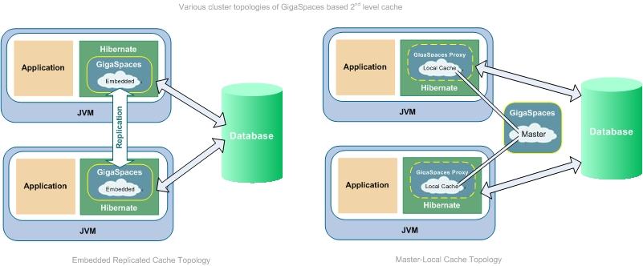

Section Summary: Using GigaSpaces as a Hibernate cache provider; creating a Hibernate-integrated Data Grid with your existing ORM.
Overview
This page explains how you can use GigaSpaces eXtreme Application Platform (XAP) to:
- Get a free 2nd-level distributed cache for your Hibernate-based database integration
- Scale up your database using the existing ORM by adding a GigaSpaces Data Grid with back-end Hibernate integration
GigaSpaces as Hibernate 2nd level cache provides:
- Unlimited cache capacity
- All activities be monitored/profiled in real-time
- Built-in support for replicated and/or partitioned cache topology
- Built-in support for embedded or remote cache
- Built-in dynamic scalability
- Built-in High-Availability support
- Built-in Spring integration
- Built-in WAN replication
- Built-in security
- Built-in deployment environment
- Built-in alerting system
Read further in this section for more details about these solutions, or jump to detailed instructions: how to get a free distributed second-level cache or how to add a GigaSpaces data grid.
 GigaSpaces fully supports the Spring Framework, and can be plugged in very easily without changing your existing code.
GigaSpaces fully supports the Spring Framework, and can be plugged in very easily without changing your existing code.
The Existing Architecture
Your existing Hibernate-based database integration probably looks like the following: the application uses Hibernate to persist its data directly to the database.

Step 1: Getting a Free Distributed Two-Level Cache
You can very easily replace your existing Hibernate cache provider, typically EHCache, with GigaSpaces. This gives you a powerful distributed cache with multiple clients.

Benefits:
- Powerful distributed cache - multiple clients, each client's updates can be accessed by all other clients
- Effortless integration using Spring
 To learn how to do this, see How to Switch Your Second-Level Cache Provider to GigaSpaces below.
To learn how to do this, see How to Switch Your Second-Level Cache Provider to GigaSpaces below.
Step 2: Scaling Up Your Database by Adding a Data Grid
If you need to scale up your database, you can use GigaSpaces as an In-Memory Data Grid. Your application communicates with the Data Grid using The GigaSpace Interface or The GigaMap Interface interfaces. On the back-end, GigaSpaces persists the data to your existing database using your existing Hibernate O/R mapping in asynchronous manner.

Benefits:
- Database scalability through partitioning and data distribution - enables higher data volumes and higher throughput with low latency
- Better decoupling between your application and the database - no need to hard-wire Hibernate and database concepts into your code and runtime environment
- Event-driven model enables notifications when data is modified
- Database access can be synchronous or asynchronous - the GigaSpaces Mirror Service allows data to be persisted to the database asynchronously, without a performance penalty
 To learn how to do this, see the Moving from Hibernate to Space best practice.
To learn how to do this, see the Moving from Hibernate to Space best practice.
Beyond the Data Grid: Scaling Out Your Application Using Space-Based Architecture
To gain ultimate scalability for your application, you can package your business logic together with the GigaSpaces space - which provides not only data but also messaging functionality. This creates a Processing Unit which is completely self sufficient (not dependent on a database, messaging server or any central component), meaning that you to duplicate it as many times as necessary without increasing complexity.
This approach is called Space Based Architecture, and the way to achieve it is the Spring-based OpenSpaces platform, which allows you to deploy your application as a set of services encased in a Processing Unit.
 To get started with SBA and Open Spaces see our eXtreme Application Platform Tutorial.
To get started with SBA and Open Spaces see our eXtreme Application Platform Tutorial.
To learn more about Space-Based Architecture and its implications, read our white paper, The Scalability Revolution: From Dead End to Open Road.
To learn more about OpenSpaces, see the OpenSpaces section in this online help.
How to Switch Your Cache Provider to GigaSpaces and Gain Distributed Caching
This section provides instructions on switching your existing Hibernate local cache, typically EhCache, with GigaSpaces. This will give you a powerful distributed cache with multiple clients and advanced clustering.

To switch your Hibernate cache provider to GigaSpaces and use GigaSpaces distributed caching:
1. Download the GigaSpaces ( Product FAQ Download Page)
Product FAQ Download Page)
2. Install GigaSpaces. If you need help, refer to the installation instructions.
3. This step is different if you are managing your Hibernate configuration using Spring (refer to the Spring documentation, ORM Data Access*** , section 12.2.2), or directly using hibernate.properties or hibernate.cfg.xml. Select the relevant tab below.
Spring Configuration
Spring Configuration
Edit your SessionFactory Setup. This is the section inside your Spring Application Context File that controls the relevant Hibernate configuration (refer to the Spring documentation, ORM Data Access , section 12.2.2).
Add or modify the following properties under <property name="hibernateProperties">:
• Set hibernate.cache.provider_class to org.openspaces.hibernate.cache.SimpleMapCacheProvider:
<prop key="hibernate.cache.provider_class"> org.openspaces.hibernate.cache.SimpleMapCacheProvider</prop>
• Set hibernate.cache.use_second_level_cache to true:
<prop key="hibernate.cache.use_second_level_cache">true</prop>
• Set gigaspace.hibernate.cache.url to /./dataGrid:
<prop key="gigaspace.hibernate.cache.url">/./dataGrid</prop>
Direct Configuration (hibernate.properties)
Direct Configuration (hibernate.properties
Edit your hibernate.properties file. Add or modify the following properties in the Second-Level Cache section:
• Set hibernate.cache.provider_class to org.openspaces.hibernate.cache.SimpleMapCacheProvider:
hibernate.cache.provider_class org.openspaces.hibernate.cache.SimpleMapCacheProvider
• Set hibernate.cache.use_second_level_cache to true:
hibernate.cache.use_second_level_cache true
• Set gigaspace.hibernate.cache.url to /./dataGrid:
gigaspace.hibernate.cache.url /./dataGrid
Direct Configuration (hibernate.cfg.xml)
Direct Configuration (hibernate.cfg.xml)
Edit your hibernate.cfg.xml file. Add or modify the following properties under <session-factory>:
• Set hibernate.cache.provider_class to org.openspaces.hibernate.cache.SimpleMapCacheProvider:
<property name="hibernate.cache.provider_class"> org.openspaces.hibernate.cache.SimpleMapCacheProvider</property>
• Set hibernate.cache.use_second_level_cache to true:
<property name="hibernate.cache.use_second_level_cache">true</property>
• Set gigaspace.hibernate.cache.url to /./dataGrid:
<property name="gigaspace.hibernate.cache.url">/./dataGrid</property>
| See all Hibernate second level Cache implementation listed below: |
4. Set or add the cache usage (the cache concurrency strategy) in your mapping resource file (*.hbm.xml files) to read-only, read-write or nonstrict-read-write:
<class name="your.class.name" table="YourTableName"> <cache usage="nonstrict-read-write"/>
Alternatively, use the <class-cache> and <collection-cache> elements in your hibernate configuration file.
You must include the following JARs from the Hibernate distribution package:
jdbc2_0-stdext.jar; dom4j-XXX.jar; commons-collections-XXX.jar; asm.jar; asm-attrs.jar; antlr-XXX.jar; ejb3-persistence.jar; hibernate3.jar; hibernate-annotations.jar; hibernate-commons-annotations.jar
5. Since your Hibernate objects and their custom type will be eventually be serialized across to wire stored on remote space or replicated into a backup space In-Memoery, these need to be serialized. You should make all your Hibernate objects and their custom fields will be implementing Serializable.
6. Launch your application. The application should instantiate a local cache based on an embedded GigaSpaces space.

7. If you want to use GigaSpaces as a distributed cache, select the distributed topology that interests you from the tabs below.
Remote Cache
Remote Cache Topology
In this topology each application accessing a remote cache.

To use the remote cache topology:
- Set your gigaspaces.hibernate.cache.url property to
jini://*/*/dataGrid
- Copy dom4j.jar and hibernate3.jar and all relevant Hibernate distribution package libraries into the <GigaSpaces Root>/lib/platform/ext folder.
- Run <GigaSpaces Root>\bin\gs-agent.bat (.sh) to start the GigaSpaces runtime environment.
- Run the deploy command to deploy the remote space:
<GigaSpaces root>\bin\gs.bat deploy-space datagrid
Wait to see the following output:
Found 1 GSMs Deploying [datagrid] with name [datagrid] under groups [gigaspaces-7.1.2-XAPPremium-ga] and locators [] SLA Not Found in PU. Using Default SLA. Waiting for [1] processing unit instances to be deployed... [datagrid] [1] deployed successfully on [10.10.254.1] Finished deploying [1] processing unit instances
- Run your application.
Master-Local Cache
Master-Local Cache Topology
In this topology each application has a lightweight, embedded cache, which is initially empty. The first time data is read, it is loaded from a master cache to the local cache (lazy load); the next time the same data is read, it is loaded quickly from the local cache. Later on data is either updated from the master or evicted from the cache.
To use the master-local topology:
- Set your gigaspaces.hibernate.cache.url property to
jini://*/*/dataGrid?useLocalCache
- Copy dom4j.jar and hibernate3.jar and all relevant Hibernate distribution package libraries into the <GigaSpaces Root>/lib/platform/ext folder.
- Run <GigaSpaces Root>\bin\gs-agent.bat (.sh) to start the GigaSpaces runtime environment.
- Run the deploy command to deploy the master space:
<GigaSpaces root>\bin\gs.bat deploy-space datagrid
Wait to see the following output:
Found 1 GSMs Deploying [datagrid] with name [datagrid] under groups [gigaspaces-7.1.2-XAPPremium-ga] and locators [] SLA Not Found in PU. Using Default SLA. Waiting for [1] processing unit instances to be deployed... [datagrid] [1] deployed successfully on [10.10.254.1] Finished deploying [1] processing unit instances
- Run your application.
Partitioned Master-Local Cache
Partitioned Master-Local Cache Topology
In this topology, data is split between two spaces (partitions) according to an index field defined in the data. An algorithm, defined in the load-balancing policy, maps values of the index field to specific partitions.
 This topology requires XAP Premium Edition.
This topology requires XAP Premium Edition.

To use the master-local partitioned topology with two partitions:
- Configure your gigaspaces.hibernate.cache.url property to:
jini://*/*/dataGrid?useLocalCache
- Copy dom4j.jar and hibernate3.jar from Hibernate distribution package into the <GigaSpaces Root>/lib/platform/ext folder.
- Run <GigaSpaces Root>\bin\gs-agent.bat (.sh) to start the GigaSpaces runtime environment.
- Run the deploy command to deploy the master space in cluster of two partitions topology:
<GigaSpaces root>\bin\gs.bat deploy-space -cluster schema=partitioned total_members=2,0 datagrid
Wait to see the following output:
gs> deploy-space -cluster schema=partitioned total_members=2,0 datagrid Found 1 GSMs Deploying [datagrid] with name [datagrid] under groups [gigaspaces-7.1.2-XAPPremium-ga] and locators [] SLA Not Found in PU. Using Default SLA. Overrding SLA cluster schema with [partitioned] Overrding SLA numberOfInstances with [2] Overrding SLA numberOfBackups with [0] Waiting for [2] processing unit instances to be deployed... [datagrid] [1] deployed successfully on [10.10.254.1] [datagrid] [2] deployed successfully on [10.10.254.1] Finished deploying [2] processing unit instances
- Run your application.
Embedded Replicated Cache
Embedded Replicated Cache Topology
This topology consists of two or more space instances with replication between them, allowing two or more applications to work with their own dedicated data store, while working on the same data as the other applications.
 This topology requires XAP Premium Edition.
This topology requires XAP Premium Edition.

To use the embedded replicated topology with two replicated instances:
- In your first application, configure the gigaspaces.hibernate.cache.url property to the following (as one long line):
/./dataGrid?cluster_schema=sync_replicated&total_members=2&id=1
- Run your first application.
- In your second application, configure your gigaspaces.hibernate.cache.url property to the following (as one long line):
/./dataGrid?cluster_schema=sync_replicated&total_members=2&id=2
- Run your second application.
Basic Guidelines
- For the application components that are read/write (up to 50% write/remove/update) you should have the hibernate 2nd local cache to use a remote partitioned space topology.
- For the application components that are read mostly (above 50% read) you should have the hibernate 2nd local cache to use a master local cache/view with remote partitioned space topology.
- The embedded replicated cache topology is recommended only when having few client applications (up to 3) where the total amount of data can be accommodated within a single JVM and the application is 50% read/write.
- For the application components that are write mostly (above 50% write/remove/update), you should not use hibernate API directly , but move into the GigaSpace Interface and use the Mirror service (if you still want to persist the data). In this case you can leverage SQLQuery or Task Executors for complex distributed activities. In this case you should use remote partitioned space topology.
| See the Moving from Hibernate to Space best practice for step by step instructions moving from Hibernate based application to GigaSpaces Data-Grid as the data access layer. |
Settings GigaSpaces local cache with Hibernate Second Level Cache
When using Hibernate Second Level Cache you can configure also GigaSpaces local cache. See below an example for both:
<property name="hibernateProperties"> <props> <prop key="hibernate.dialect">org.hibernate.dialect.${jdbc.platform}Dialect</prop> <prop key="hibernate.cache.provider_class">${hibernate.cache.provider_class}</prop> <prop key="hibernate.show_sql">{hibernate.show_sql}</prop> <prop key="hibernate.jdbc.batch_size">${hibernate.jdbc.batch_size}</prop> <prop key="hibernate.cache.use_query_cache">true</prop> <prop key="hibernate.transaction.flush_before_completion">true</prop> <prop key="hibernate.generate_statistics">true</prop> <prop key="hibernate.cache.user_structured_entries">true</prop> <prop key="hibernate.cache.use_query_cache">true</prop> <prop key="hibernate.transaction.auto_close_session">true</prop> <prop key="hibernate.connection.release_mode">${hibernate.connection.release_mode}</prop> <prop key="hibernate.cache.use_second_level_cache">true</prop> <prop key="gigaspace.hibernate.cache.url">jini://*/*/dataGrid?useLocalCache</prop> <prop key="space-config.engine.cache_size">5000000</prop> <prop key="space-config.engine.memory_usage.high_watermark_percentage">65</prop> <prop key="space-config.engine.memory_usage.write_only_block_percentage">63</prop> <prop key="space-config.engine.memory_usage.write_only_check_percentage">60</prop> <prop key="space-config.engine.memory_usage.low_watermark_percentage">55</prop> <prop key="space-config.engine.memory_usage.eviction_batch_size">1000</prop> <prop key="space-config.engine.memory_usage.retry_yield_time">100</prop> <prop key="space-config.engine.memory_usage.retry_count">20</prop> </props> </property>
GigaSpaces Hibernate 2nd Level Cache Properties
GigaSpaces Hibernate 2nd Level Cache controlled via the following system properties:
| Property | Description | Default | Mandatory? |
|---|---|---|---|
| gigaspace.hibernate.cache.url | Space URL String. This could be remote (clustered space) with/without a local cache/view URL or embedded space URL. Examples: jini://*/*/mySpace
|
YES | |
| gigaspace.hibernate.cache.timeToLive | Time in ms for the cached Hibernate object to live within the space. When you would like to evict Hibernate objects form the space based on a specific time duration, you should set this value. | Long.MAX_VALUE | NO |
| gigaspace.hibernate.cache.waitForResponse | Time in ms to wait for a matching object to be written into the space when reading object from the space. When having transactional hibernate configuration you might want to increase this value to allow GigaSpaces to wait for locked objects under a transaction to be committed before rejecting the read operation. A value of 60000 (60 second) might be relevant in such cases. | 0 | NO |